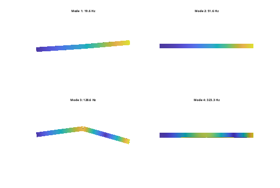
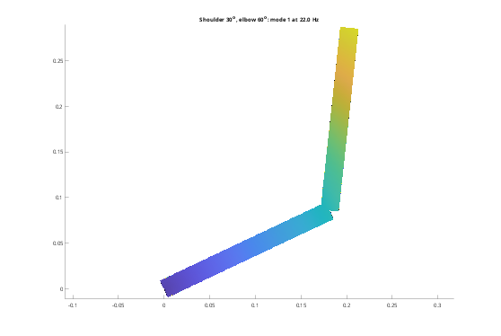

%DEMOSERIALARM Two-link arm with revolute joints (couplings and joints). % Two aluminium links are hinged to ground and to each other about z, with % torsion springs in the joints (e.g. motor/gearbox stiffness). The links % are elastic, attached to the joints through rigid couplings (RBE2) on % their end faces; set rigidLinks = true to make them rigid instead. % The model is reduced to the two joint coordinates plus a few modes, and % the arm is posed at different elbow angles (a.pose) to show how the % dynamics depend on the configuration. % % ground --(joint1)-- link1 --(joint2)-- link2 rigidLinks = false; addpath(fileparts(fileparts(mfilename('fullpath')))); out = fullfile(tempdir, 'femArm'); if ~isfolder(out), mkdir(out); end % geometry (mm): links along x, 200 x 20 x 10 fem.boxSTL(fullfile(out, 'link1.stl'), [0 -10 -5], [200 10 5]); fem.boxSTL(fullfile(out, 'link2.stl'), [200 -10 -5], [400 10 5]); alu = fem.material(70e9, 0.33, 2700); opt = {'Scale', 1e-3, 'Size', 5, 'Rigid', rigidLinks}; link1 = fem.Body(fullfile(out, 'link1.stl'), alu, opt{:}); link2 = fem.Body(fullfile(out, 'link2.stl'), alu, opt{:}); a = fem.Assembly(); a.add(link1); a.add(link2); % joint attachment points: the rigid body itself, or a coupling of an end face if rigidLinks [p1, p2a, p2b] = deal('link1', 'link1', 'link2'); else p1 = a.couple('link1', @(X) X(:,1) < 1e-9); % hub of link 1 p2a = a.couple('link1', @(X) X(:,1) > 0.2 - 1e-9); % elbow, link 1 side p2b = a.couple('link2', @(X) X(:,1) < 0.2 + 1e-9); % elbow, link 2 side end kj = 200; % joint stiffness, Nm/rad j1 = a.joint('ground', p1, 'revolute', Point = [0 0 0], Axis = [0 0 1], Stiffness = kj); j2 = a.joint(p2a, p2b, 'revolute', Point = [0.2 0 0], Axis = [0 0 1], Stiffness = kj); [K, M, T] = a.system(); [V, f] = fem.modes(K, M, 6); fprintf('%d dofs after constraints\n', size(K, 1)); disp(table((1:6)', f, 'VariableNames', {'mode', 'f_Hz'})); % actuator-level model: joint coordinates as boundary + 4 elastic modes ib = a.qdof([a.dof(j1); a.dof(j2)]); [Kc, Mc, Vc] = fem.craigBampton(K, M, ib, 4); [~, fc] = fem.modes(Kc, Mc, 4); fprintf('Craig-Bampton (%d dofs): %s Hz\n', size(Kc, 1), mat2str(fc', 4)); disp('Joint-space stiffness (Nm/rad):'); disp(Kc(1:2, 1:2)); figure('Color', 'w'); for k = 1:4 subplot(2, 2, k); u = T*V(:,k); a.plot(u, 0.03/max(abs(u(1:3*size(a.X, 1))))); title(sprintf('Mode %d: %.1f Hz', k, f(k))); view(2); axis off end % configuration dependence: pose the elbow and rebuild K, M at each angle. % pose() moves link 2 (and its coupling) rigidly about the elbow axis. angles = 0:15:90; fa = zeros(numel(angles), 2); for k = 1:numel(angles) a.pose(j2, deg2rad(angles(k))); [Kp, Mp, Tp] = a.system(); [Vp, fp] = fem.modes(Kp, Mp, 6); U = Tp*Vp; nz = 3*size(a.X, 1); % in-plane: little z motion inPlane = vecnorm(U(3:3:nz, :)) < 0.5*vecnorm(U(1:nz, :)); fi = fp(inPlane); fa(k,:) = fi(1:2); end disp(table(angles', fa(:,1), fa(:,2), 'VariableNames', {'elbow_deg', 'inplane1_Hz', 'inplane2_Hz'})); a.pose(j1, deg2rad(30)); a.pose(j2, deg2rad(60)); % shoulder 30, elbow 60 [Kp, Mp, Tp] = a.system(); [Vp, fp] = fem.modes(Kp, Mp, 1); figure('Color', 'w'); u = Tp*Vp(:,1); a.plot(u, 0.03/max(abs(u(1:3*size(a.X, 1))))); title(sprintf('Shoulder 30^o, elbow 60^o: mode 1 at %.1f Hz', fp)); view(2); a.pose(j1, 0); a.pose(j2, 0); % back to straight
22454 dofs after constraints
mode f_Hz
____ ______
1 19.625
2 51.599
3 128.65
4 323.29
5 898.09
6 1336.2
Craig-Bampton (6 dofs): [19.63 51.6 128.6 323.3] Hz
Joint-space stiffness (Nm/rad):
200.0000 -0.0000
-0.0000 200.0000
elbow_deg inplane1_Hz inplane2_Hz
_________ ___________ ___________
0 19.625 128.65
15 19.763 122.77
30 20.186 109.33
45 20.918 94.903
60 22.001 82.692
75 23.495 73.274
90 25.479 66.345

